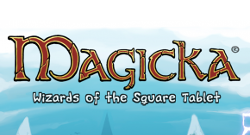

Ittle Dew
The first time I was employed at Ludosity was to work on Ittle Dew close to it's release. I mainly worked on fixing minor bugs.
After release I also did my first porting job for Ludosity, I was supposed to get Ittle Dew onto the Ouya, which was somewhat of a challenge.
None of the shaders would initially load, resulting in just a pink screen for some builds. Once the game was playable it ran at about five frames per second. So there was alot of optimization to do.
Even though some effects had to be scaled down somewhat, the game was able to launch successfully

Fret Nice
My time at Pieces Interactive, working at Fret Nice, was a very valuable experiance. Although short, I learned a great deal. It was my first job in the game development industry, and my first and only job as quality assurance. We also worked very closely with the developers of the game and were provided with internal test specifications from them, as well as TCR/TRC's from SONY and Microsft respectively.
The internal test spec was often about making sure levels could be completed, and things were balanced. The TCR/TRC was more technical, like making sure you could always go back to the playstation/xbox menu and thing like that.
Magicka: Wizards of the Square Tablet
Travel through the world of Magicka, incinerating your friends along the way
About Me

My name is Håkan Levin Henriksson, I'm 27 years old and I live in Sweden. I grew up in Stockholm, where I attended primary school and also my first year of high school before I moved to Dalarna, one of Swedens counties, where I finished high school.
During my second year in high school, when I was 16, I took a course in computer programming where we were taught the basics of C++, and I was immediately interested.
I've always had an interest in computers and how they work, I started learning HTML when I was just 13, but I really didn't know how to start build applications at that point. So when I started learning C++, my knowledge about computers in general was also deepened considerably.
Once I graduated from high school I attended the University of Skövde where I further studied programming and computer science. Since then I have worked for a total of two years in the game development industry, for a short while as a quality assurance tester, but mainly as a programmer.
During my time as a programmer, I've mainly worked with C# using Unity Game Engine and Android based platforms. I also spent much time working with C++ for Windows, Mac and Linux based systems.